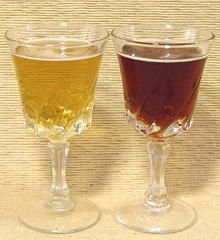
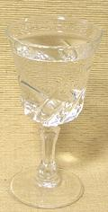
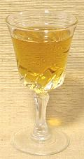
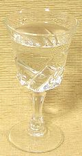

SAFARI
Users
Alcoholic Beverages
Use of alcoholic beverages is older than humantiy itself. In nature, birds, bears and elephants are noted to particularly like them, so it's a good bet our pre-human ancestors were already indulging in over-ripe berries.
Beer and wine have been made since before the beginning of civilization. Many archaeologists now think the first permanent agricultural settlements were established as a means for producing a reliable supply of beer and wine. The earliest are often associated with ceremonial or burial sites. In Armenia, a sophisticated wine production facility has been found that was in operation more than 6000 years ago, but evidence of wine extends 1000 years farther back.
Many alcoholic beverages are used in cooking. Most of the alcohol quickly evaporates, but there will always be a trace amount, so if you belong to a religious sect that strictly prohibits alcohol, you have a judgement call to make. Since ripe fruit and fermented foods often contain some alcohol, that may be your justification, but if your Imam spots you in Trader Joe's buying booze, you may be in for a scolding.
Beer and Ale
 Beer was originally associated with bread making and has long been used as a food, and as an ingredient in recipes. It is made from sprouted grains (mostly barley) that are then roasted until dry (or until lightly browned for dark beers). This "malt" is then fermented with special yeast and pure water. Generally a bitter element such as hops is added to adjust the flavor and as a preservative.
In current usage, "Ale" refers to a beer where fermentation is at room temperature and at the top of the vat, while "Beer" is fermented cold with the yeast sinking to the bottom of the vat. Practically, there's not much difference. The alcohol content of beer ranges from less than 3% to about 14% by volume, but averages just under 5% and is very rarely over 7% in North America. Non-alcoholic beer is less than 0.5% alcohol by volume.
Beer is used in cooking in all countries that drink beer, but is most
prevalent throughout Europe. Beer comes in many shades, from very light
amber to nearly black, the coloring coming mostly from the roasting of
the malted (sprouted) grain used (usually barley). Any recipe that calls
for cooking with beer should specify the shade to use. As with other
ingredients, always select a quality beer for cooking.
Subst: There is no substitute for beer, but that's not a
problem because beer is easily available worldwide (except, perhaps, in a
few remote Islamic villages), and fairly easy to make yourself should the
need arise.
Brandy
Brandy is a distilled liquor usually made from grape wine and bottled at about 40% alcohol by volume. It is made in many countries worldwide in a vast range of qualities and prices and is a common ingredient in the cuisines of Europe and North America. Brandies are also made from a variety of sweet, fermentable fruits such as apples, plums, pears and peaches.
Cognac, the most famous brandy, was invented by a Dutch factor in France
as a way to concentrate poor quality wine so he could afford wartime insurance
rates for shipping to Holland. His employers quickly discovered the error of
his instruction to dilute it back to wine. When they figured out what he was
doing the French ran him out of town and took over his stills. Cognac is still
made from inferior wine..
Calvados
Calvados is a high grade Applejack brandy made in Normandy, France, much used as an essential cooking ingredient in recipes from the northwest corner of France. It is made by distilling fermented apple cider (hard cider) and has an alcohol content of around 40%.
Subst: Other brandies can be used but won't have the distinctive
apple flavor desirable for Norman cuisine. Pear brandy would probably be the
closest but is generally less available than Calvados.
Cherry Heering
This is a sweet cherry flavored liqueur made by Peter F Heering Co. of
Denmark. It is very flavorful and world famous, so is called for in many
cuisines, particularly in baking. It is also an ingredient in many mixed
drinks. Alcohol content is 24%.
Subst: Another cherry liqueur may be usable if it is strongly
flavored and quite sweet.
Chinese Rice Wine
[Huangjiu, Shaoxing wine]
This wine is called for in thousands of Chinese recipes. The most accepted varieties are made in Shaoxing on the eastern coast of China. About 110,000 tons are made very year and it is commonly and economically available in North America. This wine is aged underground for years in large ceramic jars, but it is put up in regular wine bottles (and also fancy ceramic bottles) for export. The main export to North America is Dry, with some Semi-dry sold for drinking at special occasions.
For cooking, select a good drinkable wine. Suitable varieties are
available here in Los Angeles for between US $3.00 and $4.00 for a 750
ml bottle. Do Not Use Chinese "cooking" wine, available in clear
and tinted varieties. This is inferior wine to start with and heavily
salted to avoid paying the liquor tax.
Details and Cooking.
Gin - London Dry

[Bombay Gin]
London Gin is made by re-distilling grain alcohol along with juniper berries and a wide variety of other botanicals. These may include any of lemon, bitter orange peel, anise, angelica root and seed, orris root, licorice root, cinnamon, almond, cubeb, savory, lime peel, grapefruit peel, dragon eye, saffron, baobab, frankincense, coriander, grains of paradise, nutmeg and cassia bark. Alcohol content is generally 40% or somewhat higher.
Gin isn't used for cooking nearly as much as beer, wine, or brandy, but it does occasionally show up, primarily in meat recipes. Subst: vermouth is much lower in alcohol but has plenty of botanicals - different but often workable.
Guys: If you think that hot date may go "all the way",
avoid gin like the plague - it can negatively impact performance. While
I discovered this independently (fortunately not disastrously), it has
also been noticed by others. "Gin ... it's inclined to affect me
prowess" - Flanders and Swann, from Have some Madeira, M'Dear.
Gin - Jenever
[Hollandes, Dutch Gin]
Gin was invented by Dutch physician Franciscus Sylvius, who wished to make a stomach potion exploiting the medicinal properties of Juniper Berries. He made an extraction using distilled alcohol, put it on the market - and soon found that stomach problems seemed to be far more prevalent in Amsterdam than he had anticipated. Thus was invented the first commercial hard liquor. Discovering it in Holland during the Eighty Years War, English soldiers called it "Dutch Courage".
Do Not use Jenever in mixed drinks. Do Not use Jenever in
recipes unless it is specifically called for. Jenever is kept in the
freezer and taken in a full shot glass brought directly from the freezer
- sometimes with a chaser of lager beer.
Madeira
[Malmsey (England)]
Real Madeira is made only on the islands of Madeira, a Portuguese possession far off the western coast of North Africa. This wine undergoes a high temperature aging imitating a long sea voyage through the tropics. It was hugely popular in warmer regions before refrigeration because it is practically immortal in the bottle and lasts well even after opening. From this legacy it is called for in many European recipes as well as those from the U.S. Southeast and Brazil.
This is a fortified wine with neutral grape spirits added at the end of
fermentation or at various stages during fermentation depending
on the sweetness desired. Alcohol is about 18% by volume. Dry Madeira is
fermented off the skins and will be amber in color. Sweet versions are
fermented on the skins to balance sweetness with acid and tannin, so they
will be red. It is the dryer Madeiras that are normally used for cooking.
Details and Cooking.
Marsala
This wine is made on the island of Sicily, currently part of Italy. It is much used in Sicilian recipes and often in immodest quantities. Both Dry and Sweet versions are made, but it is the dry that is normally used for cooking.
I find the US $4.00 brands stocked by Trader Joe's fine for cooking and affordable in the quantities needed. The $17.00 bottles from the local liquor merchant are superior for sipping, but it's fiscally painful to pour a whole bottle into the stew pot. The San Antonio Winery in Los Angeles makes a California Marsala, but it's not as common as their California Madeira, perhaps because the Sicilian product is quite available.
At about 18% alcohol by volume Marsala can be kept unrefrigerated for
some weeks in a cool place away from light. Longer for sweet than dry,
and longer for cooking wines than for sipping wines.
Subst: a medium dry sherry such as an Amontillado or a cooking
grade Madeira are acceptable.
Mirin
 This Japanese "cooking wine" is 8% to 14% alcohol, but has such a high sugar content it doesn't spoil unrefrigerated - it's sake preserved in sugar. Mirin is a very common ingredient in Japanese and Korean cooking, but little known in other cuisines.
Actually real mirin is very difficult to find even here in Los Angeles -
but there are plenty of brands of "Mirin style" concoctions based on
Glucose or Corn syrup (Fructose). On the other hand, it takes only a few
minutes to make something much closer to the authentic by our recipe
Mirin - Non-Traditional.
Port
Invented in Portugal for export to England where very sweet wines were much desired, port is made sweet by killing the fermentation with brandy before all the grape sugar is converted to alcohol. The brandy brings the alcohol content up to about 18% by volume.
Port is often used in cooking, particularly for port sauces. A cooking
port can be kept unrefrigerated in a cool place away from light for a few
months, but a fine sipping port should be handled more carefully,
refrigerated if to be kept more than a few hours and consumed in short
order.
Rum
[Demon Rum (U.S. prohibitionists); Rumbullion, Kill-Devil (early Caribbean); Bumbo (Pirates)]
Rum is a distilled liquor made from sugar cane molasses. In the 18th and early 19th centuries, New England was a major distiller of rum, making it from vast quantities of molasses from sugar cane grown by slaves in the Caribbean. Some of this rum found its way back to Africa, sold to buy slaves for shipment to the Caribbean, but the main "Triangular Trade" was with Europe, not New England. Before the American Revolution every man, woman and child in the colonies consumed an average of 3 gallons of rum per year (less for children with adult males taking up the slack).
Today Jamaica and other Caribbean islands are the most prominent producers. Rum comes in many quality grades and two types, white and gold. Some use white rum for mixed drinks, but for cooking and sipping golden rum, aged in barrels, is more flavorful and far superior.
in the U.S. the most prominent culinary uses of rum are in sweet
baked goods, including the traditional but infamously inedible fruit
cake.
Sake
This Japanese beverage is more a beer than a wine, but its alcohol content of 15% or higher allows it to be kept unrefrigerated. It comes in a very wide variety of qualities and prices, in regular and "Junmai" (traditionally made). It is used in many Japanese recipes, and some by California chefs, but is pretty much unknown in other cuisines.
Sherry
[Sack (England), Apera (Australia)]
Real Sherry is made in and around Jerez, Spain, and only in Spain, by a complex "Solara" system where new wine is put in the top barrels of a stack of barrels and slowly works its way to the bottom as it ages. It is made in many quality grades and prices and in several steps from dry to sweet. The photo shows dry (Fino) on the left, medium dry (Amontillado) in the center and very sweet Cream Sherry on the right. Most Cream Sherry is exported to England where sweet wines are highly appreciated.
Sherry is one of the premier wines for use in cooking and can stand in
for some other fortified wines that may not be so easy to find. Fino
grade is considered a reasonable substitute for Chinese Rice Wine.
Details and Cooking.
Vermouth
This fortified wine has been made in Italy since the 16th century and France nearly as long, taking its name from the German word for wormwood. Red wine can be used but white wine is much more common. It is fortified with alcohol and flavored with a variety of aromatic botanicals which can include wormwood, cloves, cinnamon, quinine, citrus peel, cardamom, marjoram, chamomile, coriander, juniper, hyssop, and ginger. Exact formulas are kept secret by manufacturers.
It comes in two varieties: dry and sweet. Due to its extensive use in
martinis, dry vermouth is very common in North America and sweet vermouths
very much less so. In cooking it is used similarly to white wine, but has
a more distinct botanical flavor. At 18% alcohol by volume it can be stored
unrefrigerated in a cool place away from light, but the aromatics may fade
with time..
Vodka
 A good grade of vodka consists of absolute ethyl alcohol and distilled water. It has no flavor except the alcohol, which boils off in cooking. Despite this vodka is increasingly used in cooking, particularly by the current generation of innovative chefs. While it has no flavor of its own, the alcohol can extract flavors from other ingredients. Also it can make a reliable flambé.
Wine - Dry
Wine has been made since the depths of prehistory. In fact, winemaking and beer brewing were at the very foundation of civilization. Dry Table Wines are the most used beverages in cooking, both red and white, depending on other ingredients and ethnicity of the recipe. Excellent wines are now made in most Western countries and Australia. Fine wines were also made in Persia until radical fundamentalist sects destroyed Islamic civilization.
Always use a good drinkable wine, never a "cooking" wine which is generally of poor quality. Here in California very drinkable wines can be had for between US $3.00 and $4.00 per 750ml bottle, probably about $1.00 higher elsewhere in the country. Once opened, a recorked bottle of wine will keep for at least a couple weeks refrigerated, but in most households someone will drink it long before then. Moderate wine drinking has been shown more healthful than avoiding alcoholic beverages.
Subst: There is no substitute for real wine, but that's
not a problem because wine is easily available worldwide (except, perhaps,
in a few remote Islamic villages). In a household that simply does not
drink wine but wants some for cooking, a dry fortified wine such as
Vermouth, Madeira or Marsala can be kept on hand. A bit different, but
workable in most cases.